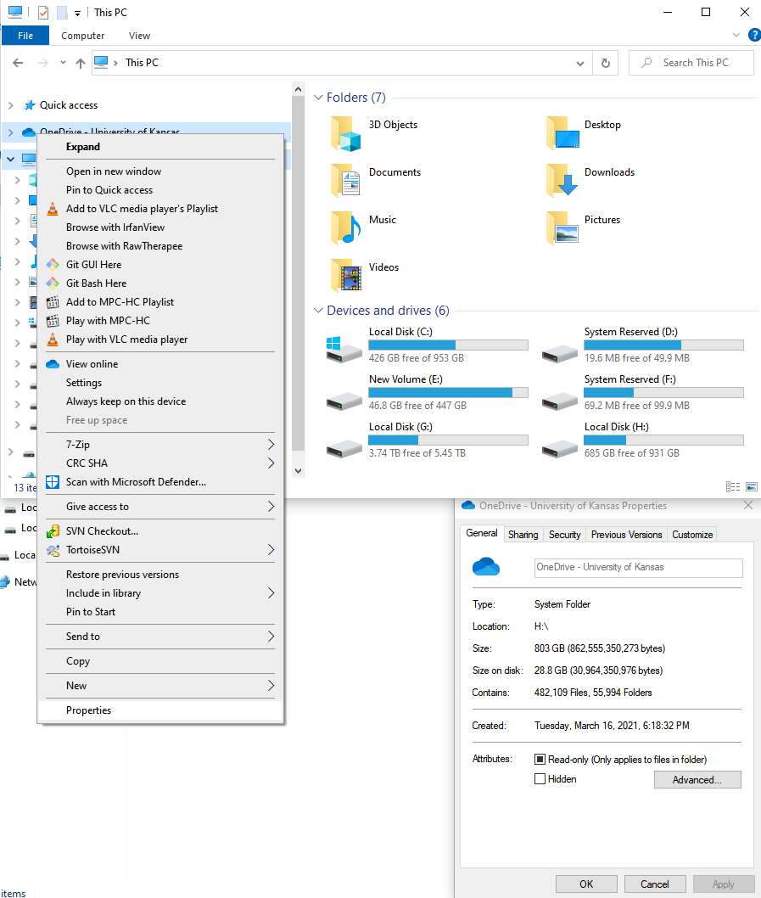
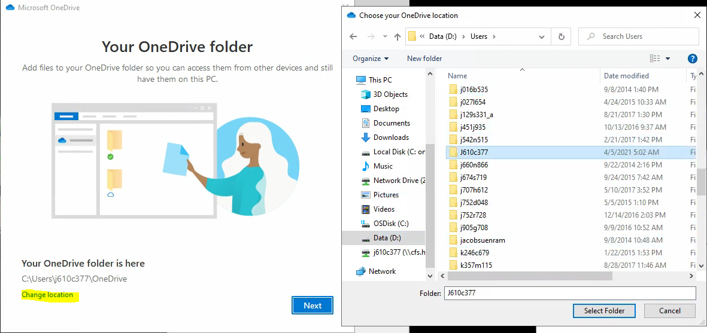
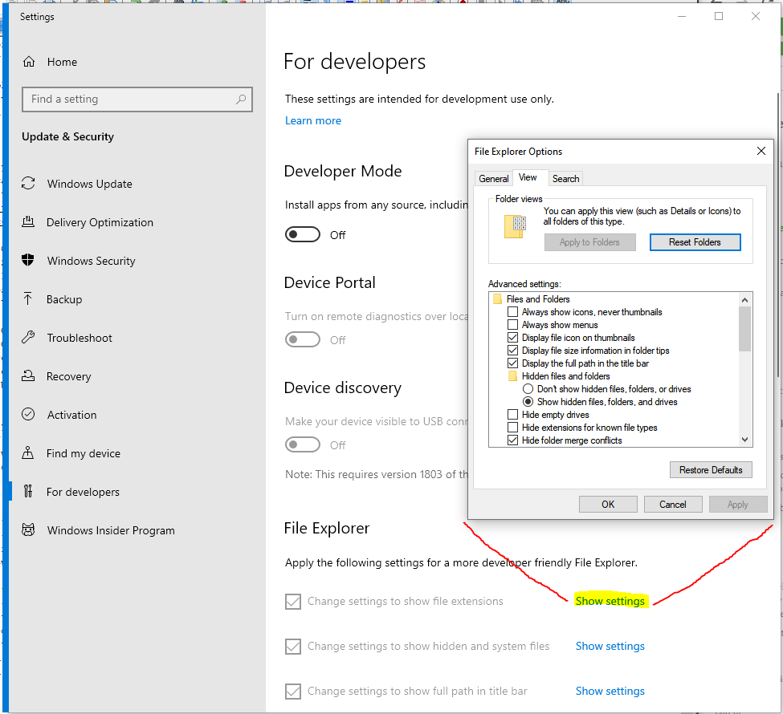
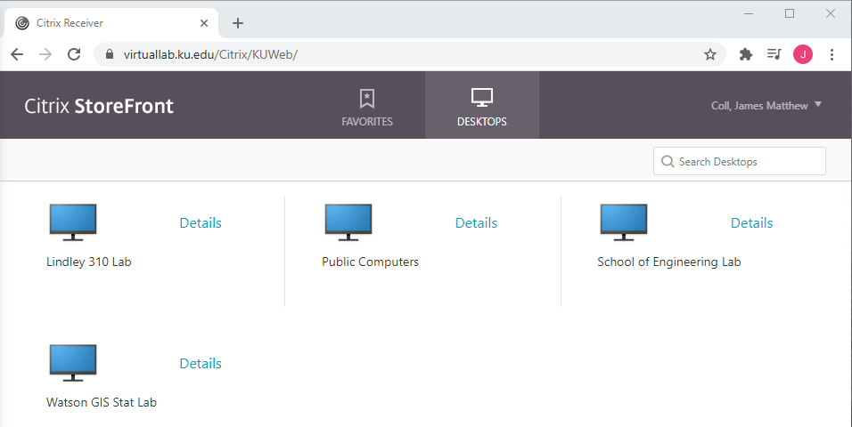
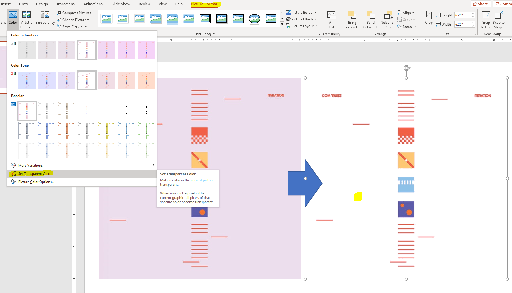
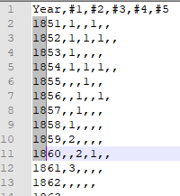

GEOINT Lab 01
public
Lab 01 - Computer basics
Learning Objective
This lab is not a beginner level “how to computer”, but we will cover a few critical PC setup tips that will only make your life easier, as well as a few lesser known tips and tricks that I’ve picked up and found useful.
Submission requirements
There is nothing to submit for this week, but make sure you’ve followed along and set up your system correctly or you’ll have a rough time as we move through the semester.
This lab is almost exclusively designed for Windows although there are certainly these same settings in Apple and Linux systems. Some of these steps will also be specific to the lab PC’s only.
Tutorial
Setting up Cloud storage
OneDrive could have been great but poor implementation on the IT end means we are often saddled with a three legged work horse. While some fields may never encounter the issues we are about to uncover, Geographic Information Science & Systems are a branch of data science and that means we have some pretty intense formats to work with. When you first log on to a PC, the first thing you should check is to see where the OneDrive folder is attempting to sync to, and how healthy that drive is. The easiest way to get this info at a glance is to open the File Explorer (usually the pinned folder icon on the task bar), and then click on This PC to see all the drives attached and their space available. If you right click on the OneDrive icon and go to properties, you’ll see where it lives (in my case, it’s on the H:)

If you are working on the Lindley Hall PC’s, they are set up so that each user has the default OneDrive location on the C:, and these fill up fast. If you find yourself short on space, you’ll want to move this to the D: like so:
- Click on the OneDrive icon in the taskbar
- Select Help & Settings > Settings
- In the Account tab, select Unlink this PC, and when the OneDrive setup screen appears, you can close it.
- You can now either move or delete that original OneDrive folder (If you’ve just started out, the easiest thing to do is just delete it). The safest and most logical place to put the new folder is in your user profile on the D:
ex: D:/Users/A123B456/OneDrive
- On the start bar search for OneDrive and open the app.
- On the OneDrive setup screen, select Get started, and then follow the instructions until you get to the screen where you can change your OneDrive folder’s location. Choose the new folder location, and then select OK.

- Wait for your files to sync and you should be all set
If you are using OneDrive though a company or though KU, you generally don’t get a whole lot of control over the name of the folder you choose. To make transferring files easer down the line, the first folder in my setup is always called “Root”, and everything lives under that. If you do have control over what your OneDrive folder is called, make sure it is short and ensure it does not have spaces or odd characters to save you headache down the line as well.
ToDo
Setting up Windows options
There are a few system settings that you should always have shown in windows. If you search “Show File Extensions” in the windows search bar, the Settings For developers tab should pop up. Click on the settings and set a few of these options. The key one we are looking for here is to make sure Hide Extensions for known file types is unchecked. You always want to know what it is you are clicking on. Other handy ones I use are the Display the full path in the title bar and the Show hidden files options.

Screenshots
Most screenshots look terribly unprofessional when simply pasted into a document, but they do convey the needed information with virtually no friction and are therefor pretty commonplace. For those times when creating a real image is more effort than it’s worth, the Snip tool (soon to be the snip and sketch tool) is your friend. Hit the windows search bar and type in snip to get the snip window to pop up. There are a few ways to snip including the option to add a delay if you need to navigate hidden menus before the screenshot is taken.
Virtual access
Using GIS more than once a week will greatly increase your familiarity and learning. You don’t need to run out and buy a new computer if you don’t want to though. If you are a KU student, you have a few means of remote access to compute resources. There is a large cluster of web based applications for use at http://virtualdesktop.ku.edu/, and you can log into the PC’s in Lindley using http://virtuallab.ku.edu/. I recommend the latter (virtual labs), as the hardware is a little more robust than the virtual desktop options. The first time you attempt to log on it will walk you through installing Citrix receiver, but you do not need to create an account or otherwise log into anything other than the KU logins.

Installing GIS
If you have a PC capable of running GIS, there are instructions on how to go about installing it here.
Misc. & Neat tips
- Copy - paste operations can get pretty heavy handed with how they handle formatting. If you right click on any of the Windows office products, there are generally options such as Paste with format, paste and merge format, paste as values, ect, that are more behaved than the standard ctrl-v option.
- PowerPoint is a pretty magical program when you drill into all the capabilities it offers, but one of the neater and more accessible functions is the ability to quickly remove a solid background color from a picture. Just add the image to a black slide, click on the Picture Format toolbar and then the Color > Set Transparent Color tool and then click on the color you want to remove the background from.

- Find yourself working with tabular text data? A handy keyboard shortcut to highlight along a specific set of character columns is to alt-click (works in notepad++, word). The example below shows how this might be useful if you wanted to quickly remove the first two digits off the year column.

Wrapping up
If you are on a PC in Lindley, make sure you save all your work and then log off. As the submission requirements outlines, there was nothing to submit for this lab, but make sure you do these steps. Note that although these settings should follow you should you move from PC to PC, take a quick second each time you log in to make sure that it’s set up as you expect (the OneDrive on the D: is the biggie)